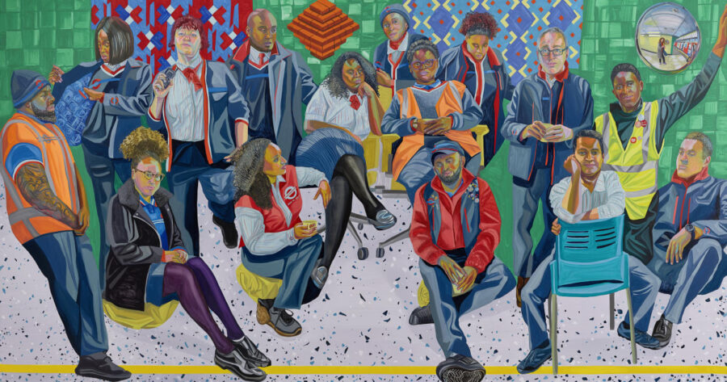

VOICES: Aliza Nisenbaum
Aliza Nisenbaum’s paintings capture tender moments between the artist and the sitter. In vibrant colors and bold lines, moments of contemplation, leisure, care, and communal gathering are depicted in intimate settings where the subjects’ personalities are uniquely represented. Painting from life, her group and individual portraits have historicized Britain’s frontline healthcare workers during the COVID-19 pandemic, actors and backstage staff at the Metropolitan Opera, and undocumented immigrants she met working as an educator at the Queens-based grassroots organization, Immigrant Movement International. In June 2026, Nisenbaum’s commissioned mural Reading Circles/ Weaving Dreams/ Seeding Futures will be on view in the Chicago Library Branch at the Obama Presidential Center.
ABOUT
Aliza Nisenbaum was born in 1977 in Mexico City, Mexico, and lives and works in Queens, New York. In 2001, she received her BFA from the School of the Art Institute of Chicago, later receiving her MFA from the same institution in 2005. Throughout her practice, Nisenbaum demonstrates the value of caring, compassionate, and ethical relationships and makes politically potent work through who and how she chooses to represent. Notable group exhibitions include, Gwangju Biennial (2023), at the ICA Boston; the Renaissance Society, Chicago; the Museu de Arte de São Paulo; the Drawing Center, NY; the New Britain Museum, CT; and the Museum of Contemporary Art, Los Angeles. She has also presented her work at The Whitney Biennial, NY, The Biennial of the Americas; the MCA, Denver; and the Rufino Tamayo Painting Biennial in Mexico City.
ACCESS INFORMATION: This program is free and CART captioning will be available. For questions and access accommodations, email gallery400engagement@gmail.com.